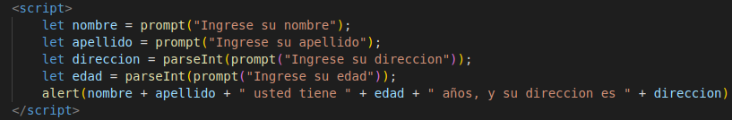
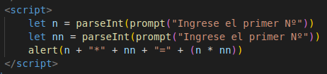
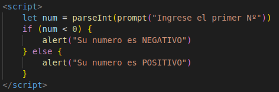

Ejercicio Nº1
Definir que es una variable y buscar una analogía con algún objeto y/o elemento del
mundo real que explique el concepto de variable.
AYUDA: video colgado en la plataforma .
Una variable es una espacio de memoria que se utiliza para almacenar datos e informacion. Ejemplo:
una caja puede ser interpretada como una variable, ya que puede ser nombrada o modificada para ser
recococible entre otras cajas, ademas de que cumple con la funcion basica de almacenar.
Ejercico Nº2
Definir que es un algoritmo y buscar una ejemplo en la vida real.
Un algoritmo es una secuencia logica y ordenada de pasos a seguir para llegar a un resultado previamente
establecido. Ejemplo:
Un ejemplo de algorito puede ser los algoritmos que se utilizan para resolver un cubo rubik
Ejercicio Nº3
Realizar un programa en J.S donde se soliciten los siguientes datos de una persona (nombre, apellido , dirección, edad) y luego se muestren por un cartel emergente. AYUDA: utilizar como base el programa de mi primer script , junto con las funciones alert() y prompt().
Ejercicio Nº4
Realizar un programa en J.S donde se soliciten dos números y luego se apliquen los operadores numéricos. Se deberá mostrar que operación se realizó y su correspondiente resultado.
Ejercicio Nº5
Realizar un programa en J.S. para determinar dado un número ingresado si es negativo.
Ejercicio Nº6
Realizar los siguientes programas en J.S
-
a- Dado dos números ingresados determinar si el primero es mayor igual que el segundo.
-
b- Dado dos números ingresados determinar si el primero es igual que el segundo.
-
c- Dado un número ingresado determinar si es igual a 0.(cero)
-
d- Dado un número ingresado determinar si es múltiplo de 2
-
e- Dado dos números ingresados determinar si el primero es diferente que el segundo.
-
f- Dado una letra ingresada determinar si es la “Y”.